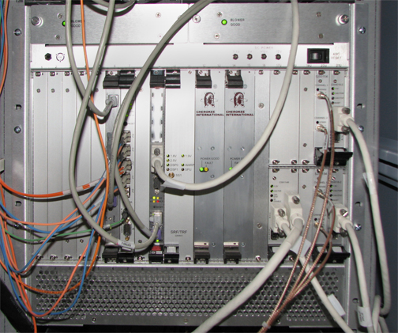
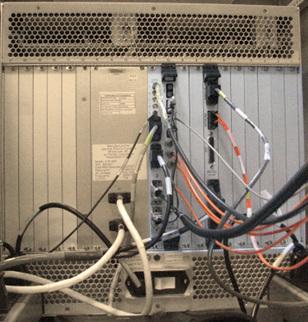

Operating Documentation
Direction 5670000, Rev# 1
Optima MR450w 1.5T Service Methods
Module Version 11.0, Version Date 1/14/10
Operating Documentation |
Combined ASC and MGD Chassis – combines the MGD and ASC functionality into one chassis. See the MGD Chassis or ASC Chassis for the detailed board functionality. The CAM Chassis differences to the MGD and ASC chassis are described in this help document.
Amplifier Support Controller – provides the Narrow and Broadband RF Amplifier interface (Control signals) and RF Power Monitoring. See the ASC help pages for more details. Boards in the ASC Chassis remain on the CAN network. There is no direct bus communication between ASC and MGD components.
Multi-Generational Data acquisition chassis – consists of components that generate the timed control signals necessary to control the MR imaging system under the direction of the imaging sequence (pulse sequence). These control signals drive the gradient output, RF output, as well as gate the RF receive window. Details of the circuit board functionality is described later.
Permits RS-232C serial connection to each of the processor boards (AGP, SCP, HEC) and the STIF Board by utilizing the existing Ethernet link.
16 to 24 port gigabit Ethernet switch that provides a network path between the Host computer and the ICNs, CAM processors, HEC, and the Term Server. This network path is used for application download to the controllers, including the downloading of PSDs to the CAM. It is also used for serial communication between the host and the two (2) CAM processor boards and the STIF board.
Illustration 1: CAM Boards - Front View
Illustration 2: CAM Boards - Front View

| Slot(s) Number | Board Name |
|---|---|
| From Left to Right | |
| 1-5 | spare slots |
| 6 | Application Gateway Processor 2 (AGP2) Processor Board |
| 7 | Interface and Remote Functions 3 (IRF3) Board |
| 8 | spare slot |
| 9 | Scan Control Processor 3 (SCP3) Board |
| 10-11 | Sequence Related Functions/ Trigger and Rotational Functions (SRF/TRF) Board |
| 12-13 | Spare Slot or Power Supply 2 (See Note Below) |
| 14-15 | Power Supply 1 |
| 16 | Spare Slot |
| 17u-18u | Reserved for MNS IF Board |
| 17L-18L | NB Amp I/F Board |
| 19u-19L | Reserved for MNS Detector Board |
| 20u-20L | NB Amp Detector Board |
| 21u-21L | Processor Board |
| NOTE: | For the latest CAM Chassis revisions, the second power supply (Slots 12-13) is not necessary. |
Illustration 3: CAM Boards - Rear View

| Slot(s) Number | Board Name |
|---|---|
| 1-7 | Spare Slots |
| 8 | Interface and Remote Functions Input/Output (IRF I/O) |
| 9 | Spare Slot |
| 10/11 | SRF/TRF Interface (STIF) |
The CAM circuit boards are located on the front and the rear of the chassis. All boards connect to a common midplane and interface through a common compact Peripheral Component Interface (PCI) bus. Exercise care when replacing or installing circuit boards in the CAM Chassis in order to avoid bending the small pins located on the midplane. Before installing or replacing a board into an empty slot, visually inspect the connectors on the midplane for bent pins. Also, check the female connector on the board for signs of damage before attempting to seat the board into the slot. The slots are keyed to prevent the insertion of an incompatible board.
The CAM is cooled by two fans located behind the metal cover plate at the top-front of the CAM Chassis. The internal temperature of the CAM is monitored by two independent temperature sensors. Sensor 1 will report an over-temp condition when the temperature in the chassis reaches 40° C (104° F). Sensor 2 will report an over-temp condition when the temperature in the chassis reaches 50° C (122° F).
To load applications, the following boards must be installed in the CAM Chassis: Applications Gateway Processor (AGP) Board, Scan Control Processor (SCP) Board, Power Supply (PS) 1. These boards must be installed in the correct slots with all the necessary cabling attached. If the software application fails to load or boot after software installation, and the CAM boards are installed and connected correctly, use “cu” (serial connection) or “rlogin” (Ethernet) to login to each of the boards and monitor them for suspicious failures during TPS reset.
| NOTE: | To remove the IRF, SRF/TRF, IRF I/O, and STIF boards: Retract the two screws that secure the boards to the CAM Chassis, and press the inset gray tabs inward to release the black chassis clips. Failure to release the clips first will damage them. |
The Application Gateway Processor (AGP) board provides an interface between the Host application used to prescribe a sequence and real-time functions of the system that play out RF gradient waveforms prescribed by the sequence. The AGP provides two RJ45 connectors to interface with the Host PC. The top connector provides an Ethernet link between the Host and the AGP. During a TPS Reset, data is transferred to the AGP via this link. The bottom connector provides a service RS-232 serial link between the AGP and the Host via the Term Server.
Available Diagnostics for Testing the AGP Board:
AGP and SCP Board Level Diagnostics: AGP
Host Datapaths: Ping -> AGP
The IRF3 board provides the interface between the System Sequence Control Subsystem (AGP and SRF/TRF) and the RF Transmit subsystem (Exciter), RF Receive Subsystem (Receiver), and Gradient Subsystem (XGD). Refer to Table 1 for a description of the LEDs on the IRF3
Table 1: LEDs on IRF3 Board
| Mnemonic | Function | Source |
| J10 RDY | Link-1 Status | FPGA |
| J11 RDY | Link-2 Status | FPGA |
| J12 RDY | Link-3 Status | FPGA |
| J13 RDY | Link-4 Status | FPGA |
| J14 RDY | Link-5 Status | FPGA |
| RED OK | Referenced Clock Detected | FPGA |
| PWR OK | Voltage OK | Voltage Monitor |
| TRS REQ | System Reset Request | Push Button |
The primary functions of the IRF3 Board are:
To provide a communication interface between the IRF3 and the DTX, RRX, and XGD components via DVMR Link.
To monitor the state of the DTX, RRX, and XGD subsystems to ensure they are functional.
Two diagnostics available for the IRF3 board; IRF3 Fiber loop, IRF3 Wide Coverage.
The Scan Control Processor (SCP) board controls the sequencing of the scan state. The SCP also provides an interface between the System Sequence Control (SSC) subsystem and the peripheral hardware in the Patient Handling Subsystem. This interface is implemented over a CAN communication link to the Scan Room Interface (SRI) board and allows the SSC Subsystem to control and monitor the peripheral hardware, scan time display, and physiological interface.
The SCP provides two RJ45 connectors to interface directly with the Host PC. The top connector provides an Ethernet link between the Host and the SCP via the network switch. During a TPS, Reset data is transferred to the SCP via this link. The bottom connector provides a service RS-232 serial link between the SCP and the Host via the Term Server. The DB-9 connector provides the CAN port for the CAN Communication Link between the SCP and the SRI.
Available Diagnostics for Testing the SCP:
AGP and SCP Board Level Diagnostics: SCP
SRI Datapaths: SRI SCP Loop Test, SRI STIF Loop Test
CAM Datapaths: SCP -> CAN
Host Datapath Diagnostics: Ping -> SCP
The Sequence Related Functions / Trigger and Rotational Functions (SRF/TRF) two-board assembly generates the RF and gradient waveforms. The SRF/TRF communicates with the RF subsystem through the IRF via cPCI backplane.
Two Digital Signal Processors on the SRF board sequence the waveform data through the transformation processors and synchronize the waveform play out with the system hardware. The transformation processes are executed by the Waveform and Rotation Processor (WARP) and the Signal Processing Unit (SPU) on the TRF board. The WARP applies the gradient shim offsets, the oblique plane imaging rotation algorithm and the Frequency Shifted B0 Eddy Current Compensation (FRESBECC) algorithm to the waveforms prescribed in the PSD. The SPU on the TRF applies the gating algorithms to the sequences prescribed in the PSD.
Timing data for the gating algorithms is provided through a high speed serial interface to the Physiological Acquisition Controller (PAC). This interface is also used by the TRF to monitor and display the physiological waveforms.
After a successful TPS Reset the DSP0, DSP1, and WARP LEDs will flash.
Available Diagnostics for Testing the SRF/TRF
CAM Board Level Diagnostics: TRF BLD, SRF BLD
CAM Datapaths: SRF -> DRF, SRF -> IRF, SRF -> TRF
Early versions of the CAM Chassis included two power supply modules. The latest version includes only one power supply module. Both versions of the CAM Chassis are equivalent.
The power supply module provides power to the CAM Chassis. The output voltage this board provides cannot be adjusted. During normal operation the green POWER SUPPLY LED will be illuminated. Some types of power supply failures will cause the red FAULT LED to illuminate. Test points next to each LED provide a convenient measurement location for checking the condition of each supply voltage with a Digital Multimeter.
This board provides a System Monitor and Control (SMC) interface by which the IRF3 Board can monitor Scan Room Door status.
Available Diagnostics for Testing the IRF I/O Board
MGD Datapaths: IRF -> IRF I/O
RRF Datapaths: RRF Loopback
The STIF board provides the fiber optic interfaces (fiber cables are not shown connected) for the fiber cables connecting to the PAC Module inside the scan room. The coaxial cable connecting to J5 provides the 60Hz line clock signal from the AC distribution panel inside the cabinet. The gray cable shown in the illustration equipped with the 9-pin sub-D connector provides an RS-232 serial link between the STIF Board and the Host via the Term Server. The function of this link is to supply the signal necessary to start a TPS Reset when this is selected from the Operators Workstation. Physiological waveform data, physiological control data, and hardkey control data is transferred from connector J3 (cable not shown in Illustration 3).
Available Diagnostics for Testing the STIF Board
SRI Datapaths: SRI STIF Loopback
SRI Functional Tests: STIF - SRI Fiber Optic
Fiber Repeater Diagnostics: SRI STIF Loopback, SPU -> STIF
Fiber Optic Diagnostics: STIF Fiber Optic Test
The Term Server is physically located next to the Ethernet Switch. The Term Server permits RS-232C serial connection to each of the processor boards and the STIF Board by utilizing the existing Ethernet link. Serial ports are selected at the Term Server based on the information received in the Ethernet signal. The serial lines on the Term Server are connected as follows: Port 1 connects to the HEC, Port 2 connects to the AGP, Port 3 connects to the SCP, and Port 4 connects to the Host serial reset port on the STIF Board. Port 4 is required to complete a TPS Reset from the Host. The Ethernet cable from the Term Server can connect to any open port on the Ethernet Switch.
The Network Switch is either a 16 or 24 port gigabit Ethernet switch. The status of each port is indicated by a set of LEDs viewable on the front of the switch. The LEDs indicate link activity, and link speed. Some models also show whether the communication is full or half duplex. In normal operation, each link with an Ethernet cable connected should show Link Activity and the Power LED should be lit/active. The Ethernet lines can be connected to any of the ports in any order. Connections can be swapped between any of the ports for troubleshooting.